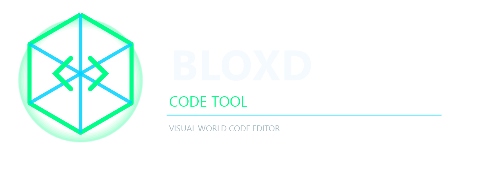

Windows
Windows 10 or later · 64-bit
assets/downloads/BloxdBlocks-v3-Setup.exe

Download BloxdBlocks for Windows, macOS, or Linux, or use the editor in your browser.
Windows 10 or later · 64-bit
assets/downloads/BloxdBlocks-v3-Setup.exe
Apple silicon and Intel Macs
BloxdBlocks-v3-Setup.dmg · GitHub Releases
Debian and Ubuntu · 64-bit
BloxdBlocks-v3-Setup.deb · GitHub Releases
The full block editor is available in your browser. No installer required.